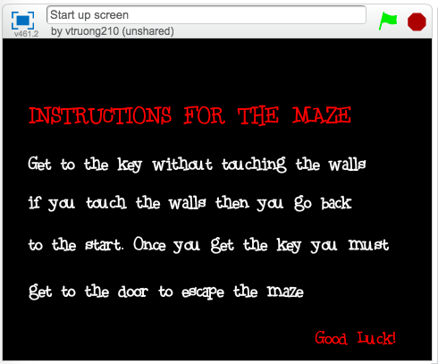
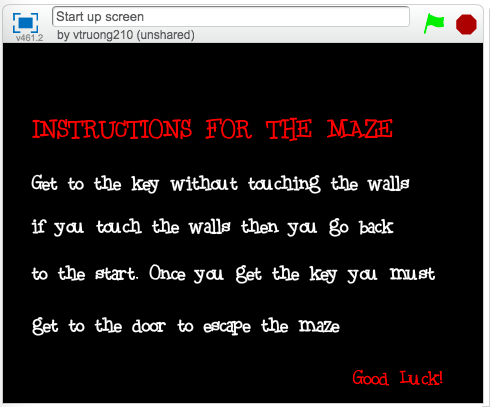

Projects
Name: Scratch Project
Duration: August 30, 2018 - September 9,2018
Class: Computer Science Principals
Objective: Learning basic language of Scratch and exploring the language
In my Computer Science Principal class, we are given many opporutunities to learn and explore different programming languages. One of the very first languages we learned was Scartch. Scratch is a very basic programming language. A project that we had in class for Scratch was to work with a partner to create a game. During this project we were pushed to be more creative with whatever we chose to do. We began by brainstorming ideas for the game, we both came to the conclusion of combining the ideas that we had. So we had a multi-layer puzzle. It began with a basic maze and then it was supposed to lead to an escape room where you can interact with the different items within the room. During the project I honed my skills in coding and I even learned how to make a title screen. From the Scratch project I learned how to manage my time because our time was very limited, I learned how to make a goal that was attainable, and lastly I learned how to communicate ideas and proeedures with someone. Though the project may not seem like it helped me towards my goal it really did. Learning new program languages gives me the ability to create my website or any website, to spread the word of new and current non profits that I want to be a part of. I also practices communication skills during the project, because we were allowed to communicate with our partner and groups around us for help or to help.
 

Name: Image Manipulation Project
Duration: March 4, 2019 - March 25, 2019
Class: Computer Science Principals
Objective: Learning how to manipulate images strictly using codes
In my Computer Science Principal class, we learned how to do image manipulation. We were tasked to manipulate an array of images with coding alone. During this expereience there was a constant need to lean more than what we were given, which resulted in a better understanding of coding. This also taught us the skill to dig deeper for information and how to ask the right question to get the answer we desired. For this project we functioned solely in iPython. We were given different prompts and we chose the prompt of promoting a cause, my team and I decided to promote the cause of saving turtles. This involved pictures of turtles and plastic waste found in the ocean and even on our beaches. In order to outline the affects of waste in the ocean and beaches we created boarders for the images. This was used to make the images stand out more and to catch people's attention. Next we decided to set a kind of mood. so we used a shading technique where we change all of the alpha values in the image to make the image darker. The purpose of this was to outline the darker outcome of litering and plastic waste. Lastly we added a logo of a straw and a circle crossing it out. Coming into this project I was a complete novice, with little to no experience in image manipulation so I learned how to self teach myself and go the extra mile to really learn how to perform a task that I wanted to execute. I also honed my leadership skill in this project because despite being less expereince I had the bigger picture in mind. So I knew what we needed to do, but also how much time we had for each task. I helepd us manage our time without becoming overwhelmed. All in all this project has definitely taught me much more than just coding image manipulation.